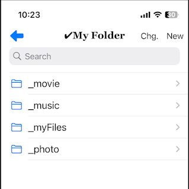
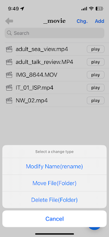
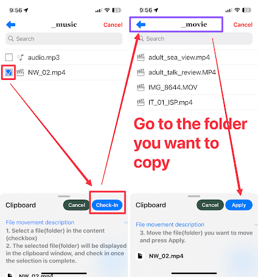
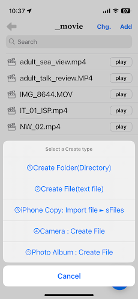

1. basic folders
The four default folders in sFiles are initially created and cannot be deleted (for management purposes).
2. a create type

1) Modify Name(rename)
- Change folder (directory) and file names.
2) Move File(Folder)
- Move folders (directories) and files to other folders (directories).


- Select the file (folder) to be moved using the checkbox and check in.
- Move the file(folder) you want to move and press Apply Button.
3)Delete File(Folder)
- Delete folders (directories) and files. Please note that if you delete a folder (directory), lower level information will be deleted.
3. a change type

①Create Folder(Directory)
- A new folder (directory) is created.
②Create File(text file)
- A new text file is created.
③iPhone Copy: Import file ► sFiles
- Import information from your iPhone into the sFiles app.
④Camera : Create File
- Take a picture with your camera and create a new image file.
⑤Photo Album : Create File
- Create an image by importing an image file from Photo Album.